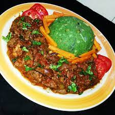

Mukimo recipe

Description
Mukimo is one of the best African foods in the world(probably the best). With easy-to-get ingredients, and a simple procedure, mukimo is the not only one of the sweetest African delicacies, but also one of the sweetest African delicacies, but also the easiest to prepare.
It originates from Central Kenya, more specifically, from the Agikuyu community. It's evolved to become a main delicacy all over Kenya, and soon the world1 If you ever come to Kenya this is one meal you should definitely try.
Lucky for you, I have taken the liberty to make a recipe that you can use easily at home. So that if you have the ingridients, you're good to go!
Ingredients
- 1kg Irish potatoes(fresh ones give better taste)
- 2 handfuls of pumpkin leaves(spinach will do just fine too)
- 3 cups of soft maize off the cob
- A bunch of spring onions(finely chopped)
- A spoonful of cooking oil
- Salt to taste
Steps
- Step 1
Carefully peel the potatoes and slice them into halves, wash them clean and set aside
- Step 2
Prepare the pumpkin leaves by removing the stalk and shred them into sizeable pieces. You can also blend them for richer colour. lf you are using spinach you just need to shred a little bit as well
- Step 3
Mix the pumpkin leaves, maize and potatoes in a Sufuria and add some water. Just enough for everything to cook well.
- Step 4
Place the Sufuria or cooking pot on fire and let the mixture boil for 30 minutes under medium heat. Open and add a pinch of salt and let it cook for 10 more minutes
- Step 5
Reduce the heat and mash everything together using a wooden spoon until all blends in well. Remove from. Heat and set aside
- Step 6
In another larger pot/Sufuria, pour in the spring onions and cooking oil and place on fire. Mix until the onions turn golden brown then adjust the heat to minimal and add the Mashed mixture. Mix well
- Step 7
You can now remove from the heat and serve while hot
Mukimo can be served with beef stew, chicken stew and Kachumbari on the side. A cold fruit juice will also come in handy